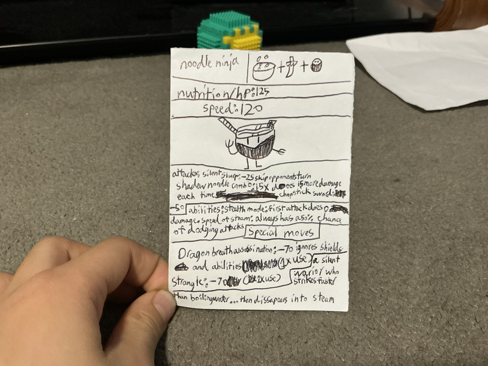

about foodies:foodies is a card game that is hopefully going to get published
please star our website,I know its small but I am only 9 years old
help!foodies are in crisis!mayday!Its may aaaaaaaaaaaaaaaaaaaaahhhhhhhhhhhhhhh

here you can see a photo of a foodie card is called noodle ninja that is made of paper and is not yet published
Join the Foodies World Whether you love strategy games, creative characters, drawing, storytelling, or food-themed adventures, Foodies is a place where imagination comes to life.
About Foodies
Foodies is a creative world inspired by food, imagination, art, and original characters. Every Foodie is designed with its own personality, style, powers, and story. What began as hand-drawn ideas on paper slowly became a growing collection of unique food-inspired characters.
Foodies combines creativity with humor, action, and design. Some Foodies are based on desserts, others on noodles, frozen treats, spicy foods, snacks, or meals from around the world. Each character is carefully imagined with its own look, abilities, strengths, and identity.
The goal of Foodies is simple:
Create fun, memorable food characters that feel alive.
⸻
The Creation of Foodies
Foodies started with simple drawings and ideas. Over time, those ideas evolved into stronger characters with detailed designs, abilities, and personalities.
Every Foodie begins with imagination:
* A food idea
* A personality
* A special power
* A unique design
* A creative name
From there, the character grows into something original.
Some Foodies are calm and clever.
Some are powerful and destructive.
Others are mysterious, funny, fast, or unstoppable.
No two Foodies are exactly the same.
⸻
What Makes a Foodie Special?
Each Foodie has:
* A custom design
* Original attacks or abilities
* Different strengths and weaknesses
* A unique personality
* A special role in the Foodies universe
Some Foodies focus on speed.
Others focus on defense or powerful attacks.
Some rely on strategy and clever abilities.
The variety is what makes the world of Foodies interesting.
⸻
Featured Foodies
Noodle Ninja
A fast and silent warrior inspired by noodles and ninja legends. Noodle Ninja attacks quickly and disappears like steam rising from boiling water.
Icecream Giant
A frozen titan capable of slowing enemies with icy attacks and overwhelming opponents with cold power.
Dessert Titan
A massive dessert warrior with crushing strength and powerful candy-based abilities.
⸻
Creativity and Imagination
Foodies is built around creativity. Every character begins as an idea and grows through drawing, storytelling, and imagination.
The world of Foodies encourages:
* Drawing
* Character design
* Creative writing
* Storytelling
* Original ideas
* Artistic experimentation
Foodies is always expanding with new characters, new ideas, and new styles.
⸻
The Future of Foodies
The Foodies universe continues to grow with:
* New Foodie characters
* Bigger stories
* Improved artwork
* Character collections
* Digital designs
* Animations
* Comics
* Creative projects
As new Foodies are created, the world becomes larger and more detailed.
⸻
Why Foodies Exists
Foodies exists to turn imagination into something real.
A simple drawing can become a character.
A character can become a story.
A story can become an entire world.
Foodies is about creativity without limits.
Welcome to the world of Foodies.